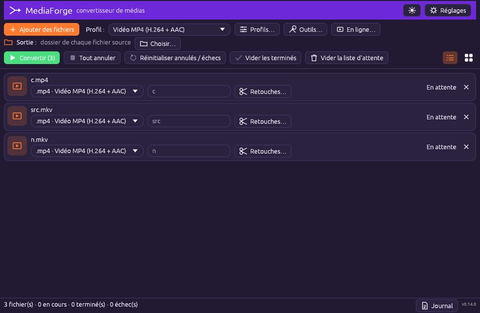
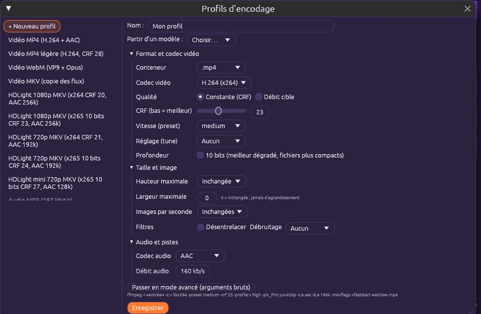
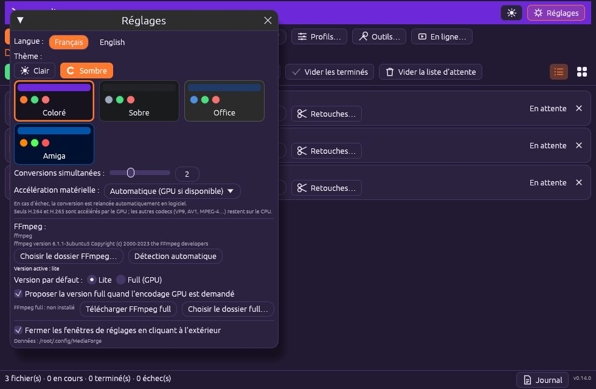

🔄 MediaForge
Convertisseur de médias (vidéo, audio, image) par lots. MediaForge convertit, retouche et assemble vos fichiers avec FFmpeg, sans ligne de commande. Glissez des fichiers, choisissez un profil, cliquez sur Convertir.
Premiers pas #
La fenêtre principale est une liste d'attente : chaque ligne est un fichier à convertir, avec son propre format, son nom de sortie et ses retouches.

- Cliquez sur Ajouter des fichiers ou glissez-déposez des fichiers (ou un dossier entier) dans la fenêtre.
- Choisissez un Profil global dans la liste en haut : il s'applique à tous les fichiers. Chaque ligne peut ensuite avoir son propre format.
- Indiquez le dossier de Sortie (par défaut : le dossier de chaque fichier source) avec Choisir….
- Cliquez sur Convertir. L'état de chaque ligne passe de « En attente » à « En cours » puis « Terminé ».
- Utilisez Vider les terminés pour nettoyer, ou Réinitialiser annulés / échecs pour relancer ce qui a échoué. Le bouton Journal affiche la sortie détaillée de FFmpeg.
Créer un profil d'encodage visuellement #
Plus besoin de connaître les arguments FFmpeg : Profils… ouvre un éditeur où tout se règle avec des listes, des curseurs et des cases à cocher. La ligne de commande équivalente s'affiche en bas, à titre d'information.

- Cliquez sur Profils… puis + Nouveau profil. Donnez un nom, ou partez d'un modèle (MP4, MKV, WebM, HDLight…) via Partir d'un modèle.
- Format et codec vidéo : choisissez le conteneur (.mp4, .mkv, .webm…) et le codec (H.264, H.265, VP9, AV1 selon votre FFmpeg et votre GPU).
- Qualité : Constante (CRF) règle la qualité (plus bas = meilleur, 18–23 est un bon réglage H.264) ; Débit cible vise une taille précise.
- Vitesse (preset) : plus lent = fichier plus petit à qualité égale. Profondeur 10 bits améliore les dégradés (H.265).
- Taille et image : hauteur ou largeur maximale (jamais d'agrandissement), images par seconde, désentrelacement, débruitage.
- Audio et pistes : codec (AAC, Opus, MP3…) et débit.
- Cliquez sur Enregistrer : le profil apparaît dans la liste de la fenêtre principale.
Incrustations : timecode, texte, logo #
Dans l'éditeur de profil, la section Incrustations grave des éléments dans l'image au moment de l'encodage.
- Timecode : cochez l'option, choisissez la position (grille 3×3), la taille, la couleur et le fond. Le timecode suit le temps réel de la vidéo, à la bonne cadence d'images.
- Texte : saisissez le texte (titre, copyright, nom du client), police, taille, couleur, ombre/fond, position. Vous pouvez ajouter plusieurs textes.
- Logo PNG : choisissez le fichier, la position, la taille (en % de la largeur) et l'opacité. La transparence du PNG est respectée.
- Vérifiez le résultat avec Aperçu avant de lancer le lot.
Aperçu de l'image encodée #
Le bouton Aperçu de l'éditeur génère une image fixe avec les réglages réels (échelle, recadrage, incrustations) à partir du premier fichier de la liste, sans encoder toute la vidéo.
- Ajoutez au moins un fichier dans la liste principale.
- Dans l'éditeur de profil, réglez les incrustations puis cliquez sur Aperçu.
- Ajustez positions et tailles jusqu'à obtenir le rendu voulu, puis enregistrez.
Mode avancé (arguments bruts) #
Le bouton Passer en mode avancé (arguments bruts) convertit le profil visuel en texte éditable pour les besoins que l'éditeur ne couvre pas.
- Réglez le profil visuellement au plus près, puis passez en mode avancé.
- Modifiez les arguments.
{in}/{out}désignent l'entrée et la sortie. - Enregistrez : le profil reste utilisable comme les autres.
-vf eq=contrast=1.1) à un profil existant pour corriger toute une série de vidéos trop plates.FFmpeg « lite » ou « full » (GPU) #
Par défaut MediaForge utilise le FFmpeg déjà installé sur votre machine (version « lite »). Pour encoder avec la carte graphique, il propose la version « full ».

- Ouvrez Réglages : la section FFmpeg indique la version détectée.
- Si un encodage demande des codecs ou un GPU absents, MediaForge affiche une invitation à utiliser la version full.
- Acceptez : la version full est téléchargée une seule fois dans le dossier de données de l'application.
- Choisissez ensuite dans Réglages quelle version est utilisée par défaut.
Accélération GPU #
MediaForge détecte les encodeurs matériels disponibles (NVIDIA NVENC, Intel QSV, AMD AMF, VAAPI sous Linux) et les propose dans le choix du codec.
- Dans Réglages, vérifiez la liste « Accélération » détectée.
- Dans l'éditeur de profil, choisissez un codec marqué GPU (ex. H.265 NVENC).
- Lancez la conversion : le fichier est encodé beaucoup plus vite, à qualité légèrement inférieure à débit égal.
Découpe (début / fin) #
Le bouton Retouches… d'une ligne ouvre la fenêtre de retouche : découpe et recadrage propres à ce fichier.
- Cliquez sur Retouches… à droite du fichier.
- Saisissez le début et la fin (hh:mm:ss.ms) de la portion à conserver.
- Validez : la conversion ne traitera que ce segment.
Recadrage #
Supprimez des bandes noires ou changez de cadrage depuis Retouches….
- Ouvrez Retouches… sur le fichier.
- Renseignez la zone conservée (largeur, hauteur, décalage X/Y).
- Validez et convertissez.
Télécharger depuis Internet (En ligne…) #
Le bouton En ligne… télécharge une vidéo ou un audio à partir d'une adresse web grâce à yt-dlp, puis l'ajoute à la liste.
- Cliquez sur En ligne….
- Collez l'adresse (URL) et choisissez vidéo ou audio seul.
- Lancez : le fichier est téléchargé puis ajouté à la file de conversion.
Listes de lecture et lots d'URL #
Collez plusieurs adresses (une par ligne) ou l'adresse d'une liste de lecture : tous les éléments sont téléchargés l'un après l'autre.
- Dans En ligne…, collez une URL par ligne ou l'URL de la playlist.
- Choisissez le format.
- Validez : chaque élément rejoint la file.
Fusionner des vidéos #
Outils… › Fusion assemble plusieurs fichiers bout à bout en un seul.
- Ouvrez Outils… et choisissez Fusion.
- Ajoutez les fichiers et ordonnez-les (monter/descendre).
- Lancez : un seul fichier est produit.
Extraire / remplacer une piste audio #
Extrayez la bande son d'une vidéo, ou remplacez-la par un autre fichier audio.
- Outils… › Piste audio.
- Choisissez la vidéo et l'action (extraire ou remplacer).
- Sélectionnez le format audio ou le fichier de remplacement.
Mixage audio et vidéo #
Mélangez une piste audio supplémentaire (musique, commentaire) avec la vidéo.
- Outils… › Mixage.
- Choisissez la vidéo et la piste à ajouter.
- Réglez les volumes de chaque source et lancez.
Renommer des fichiers par lots #
Renommez en masse selon un motif (préfixe, numérotation, remplacement de texte).
- Outils… › Renommer.
- Ajoutez les fichiers, définissez le motif.
- Vérifiez l'aperçu des nouveaux noms puis appliquez.
Images par lots (redimensionner / convertir) #
Redimensionnez et convertissez des dizaines d'images en une fois.
- Outils… › Images par lots.
- Choisissez le format de sortie, la taille maximale et la qualité.
- Lancez le traitement ; les originaux ne sont jamais écrasés par défaut.
Thèmes clair / sombre et langue #
Le bouton soleil/lune en haut à droite alterne clair/sombre. La langue (français / anglais) se choisit dans Réglages.
- Cliquez sur l'icône de thème pour alterner.
- Dans Réglages, choisissez la langue de l'interface.